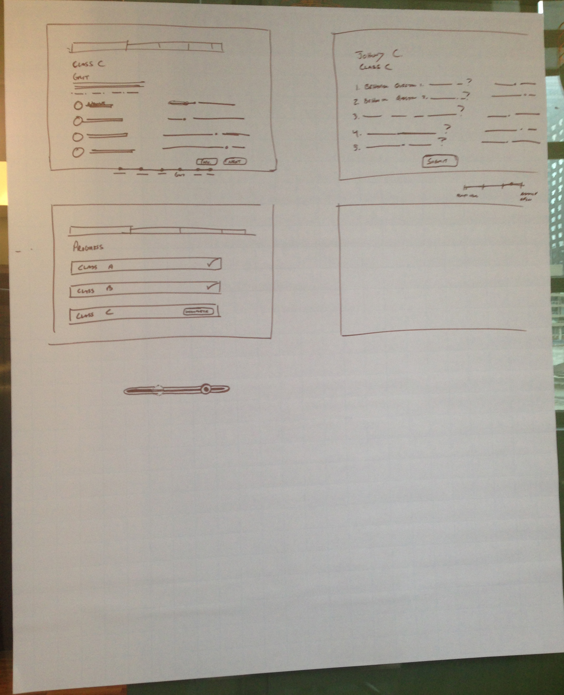

3 12 3
Supplies needed: Easel Pad, Paper, Sharpie
Estimated time: 30 Minutes
Best to use when
3-12-3 is best to use for large groups of people that are looking to converge on to one single idea. It alleviates any large group think by splitting groups into teams of people. The time restraint is meant for people to be concise about their thinking and explanations.
This format for brainstorming compresses the essentials of an ideation session into one short format. The numbers 3-12-3 refer to the amount of time in minutes given to each of three activities: 3 minutes for generating a pool of observations, 12 for combining those observations into rough concepts, and 3 again for presenting the concepts back to a group.
This game is adapted from Gamestorming.
Instructions
- For the first 3 minutes, open individual brainstorming. This can take the form of Mind Mapping or Crazy Eights.
- Split everyone up into groups of 2 or 3. Give each group an Easel Pad so they can draw their UI large enough for the room to see.
- For 12 minutes, let the group share their ideas they came up with in Step 1. Then they should converge in on one idea that they believe is the best and draw it on the Easel Pad.
- Each group gets 3 minutes presents their idea to the larger group.
- Conclude with either critique or another round switching up partners.
Examples
